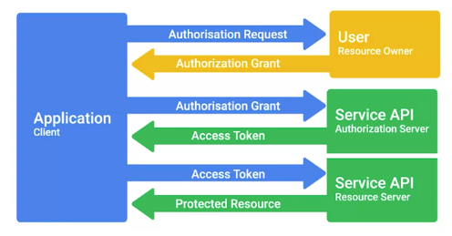
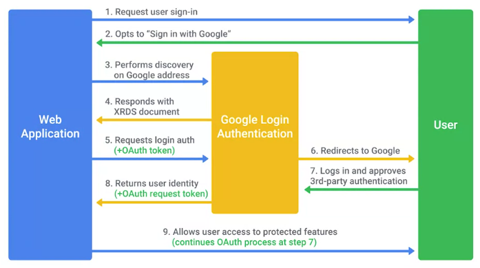

Autorización y Auditoría
Métodos de autorización y control de acceso
A continuación, vamos a hablar de autorización, que suele estar íntimamente ligada a la autenticación. Mientras que
la autenticación se relaciona con verificar la identidad de un usuario, la autorización se refiere a describir a
qué cosas la cuenta del usuario tiene o no tiene acceso.
Antes, cuando hablamos de Kerberos, el usuario autenticaba y recibía un ticket de otorgamiento de ticket. Esto
puede usarse para solicitar acceso a un servicio específico enviando una solicitud al servicio de otorgamiento de
tickets. Es en este momento cuando la autorización entra en juego, ya que el servicio de otorgamiento de tickets
decidirá si al usuario en cuestión se le permite acceder al servicio que solicita, o no. Si no se le permite
acceder al servicio o no tiene autorización para ello, la solicitud será rechazada por el servicio de otorgamiento
de tickets.
Control de acceso
OAuth es un estándar abierto que permite a los usuarios otorgar a sitios web y aplicaciones de terceros acceso a su
información sin compartir credenciales de cuenta. Esto se puede considerar como una forma de delegación de acceso
porque el acceso a la cuenta del usuario se está delegando a un tercero. Esto se logra pidiéndole al usuario que
confirme que está de acuerdo con permitir el acceso de terceros a cierta información sobre su cuenta. Por lo
general, esta solicitud enumerará específicamente qué clases de información o acceso se solicitan. Tras la
confirmación, el proveedor de identidad suministrará al tercero un token que le da acceso a la información del
usuario. El tercero puede usar este token para acceder a los datos o servicios ofrecidos por el proveedor de
identidad directamente en nombre del usuario. OAuth se usa comúnmente para otorgar acceso a aplicaciones de
terceros para las API ofrecidas por grandes compañías de Internet como Google, Microsoft y Facebook.

Los permisos de OAuth se pueden usar en ataques del tipo de suplantación de identidad para obtener acceso a cuentas
sin poner en riesgo las credenciales. Esto funciona enviándoles a posibles víctimas correos electrónicos de
suplantación de identidad que parecen legítimas solicitudes de autorización de OAuth que solicitan al usuario que
otorgue acceso a algunos aspectos de su cuenta a través de OAuth. Una vez que el usuario concede el acceso, el
atacante tiene acceso a la cuenta a través del token de autorización OAuth.
Es importante distinguir entre OAuth y OpenID. OAuth es específicamente un sistema de autorización y OpenID es un
sistema de autenticación, aunque por lo general se usan juntos. OpenID Connect es una capa de autenticación
desarrollada sobre OAuth 2.0, diseñada para mejorar OpenID y para integrarse mejor con las autorizaciones de
OAuth.
Dado que TACACS+ es un sistema AAA completo, también maneja la autorización junto con la autenticación. Esto se
hace una vez que un usuario se autentica, permitiendo o invalidando el acceso a la cuenta de usuario para ejecutar
ciertos comandos o acceder a ciertos dispositivos. Esto no solo te permite autorizar el acceso de admin a los
usuarios que administran dispositivos, sino también permitir un acceso menos privilegiado a otros usuarios cuando
es necesario. Por lo tanto, los sistemas AAA más sofisticados o configurables pueden incluso permite un mayor
refinamiento de la autorización al nivel de comando. Esto te da mucha más flexibilidad en cómo otorgas acceso a
usuarios o grupos específicos en tu organización.
RADIUS también te permite autorizar el acceso a la red. Por ejemplo, tal vez desees permitir que algunos usuarios
tengan acceso a Wi-Fi y VPN mientras que otros pueden no necesitarlo. Cuando se autentican en el servidor RADIUS,
si la autenticación tiene éxito, el servidor RADIUS devuelve la información de configuración al servidor de acceso
a la red. Esto incluye autorizaciones que especifican a qué servicios de red se le permite acceder al usuario.

Lista de control de acceso
Una lista de control de acceso, o ACL, es una forma de definir permisos o autorizaciones para objetos. El caso más
común que puedes encontrar tiene que ver con los permisos del sistema de archivos. Un sistema de archivos tendría
una ACL, que es una tabla o base de datos con una lista de entradas que especifican derechos de acceso para
individuos o grupos a diversos objetos en el sistema de archivos, como carpetas, archivos o programas.
Estos permisos de acceso individuales por objeto se denominan entradas de control de acceso y forman la ACL. Las
entradas individuales pueden definir permisos que controlan si un usuario o grupo pueden o no leer, escribir o
ejecutar objetos.
Las ACL también se usan ampliamente en la seguridad de la red para aplicar controles de acceso a routers,
conmutadores y firewalls. Las ACL de red se usan para restringir y controlar el acceso a servicios alojados que se
ejecutan en hosts ubicadas en tu red. Pueden definirse ACL de red para tráfico entrante y saliente. También se las
puede usar para restringir el acceso externo a los sistemas y limitar el tráfico saliente para hacer cumplir
políticas o impedir transferencias de datos salientes no autorizadas.
Auditoría
Seguimiento de uso y acceso
La auditoría significa mantener registros de los recursos y servicios a los que tus usuarios acceden o de lo que
hicieron cuando usaban tus sistemas. Implica revisar estos registros para garantizar que no haya nada fuera de lo
común.
Por ejemplo, un servidor TACACS+ estaría más preocupado por mantener un registro de la autenticación de usuarios,
ante qué sistemas se autenticaron, y qué comandos ejecutaron durante su sesión. Esto es porque TACACS+ es un
sistema AAA de dispositivo de acceso que administra quién tiene acceso a tus dispositivos de red y qué hacen en
ellos.
El sistema AAA de Cisco admite la auditoría de los comandos individuales que se ejecutan, la conexión desde y hacia
los dispositivos de red, los comandos que se ejecutan en modo privilegiado, y los servicios de red y detalles del
sistema, como recargas de configuración o reinicios.
RADIUS rastreará detalles como la duración de la sesión, la ubicación del cliente y el ancho de banda o demás
recursos utilizados durante la sesión. Esto se debe a que RADIUS es un sistema AAA de acceso a la red. La auditoría
RADIUS se inicia con el envío, por parte del servidor de acceso a la red (NAS), de un paquete de solicitud de
auditoría al servidor de auditoría, que contiene un registro de eventos que debe asentarse. Esto inicia la sesión
de auditoría en el servidor. El servidor responde con una respuesta de auditoría que indica que se recibió el
mensaje. El NAS seguirá enviando mensajes periódicos de auditoría con estadísticas de la sesión hasta que se recibe
un paquete de finalización de auditoría.
 Índice
Índice